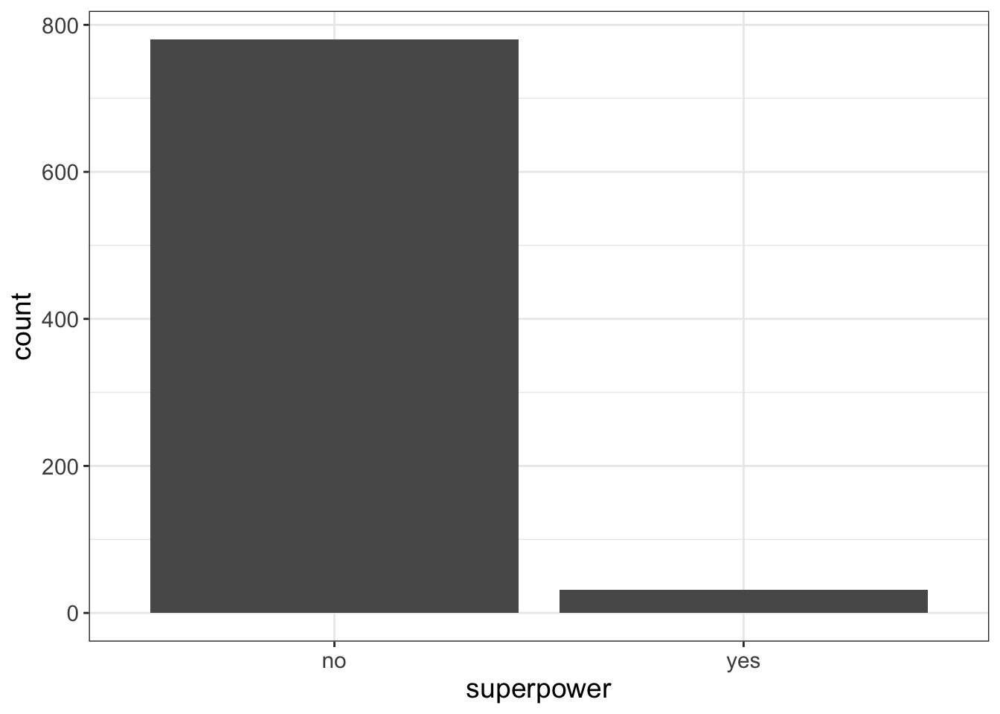
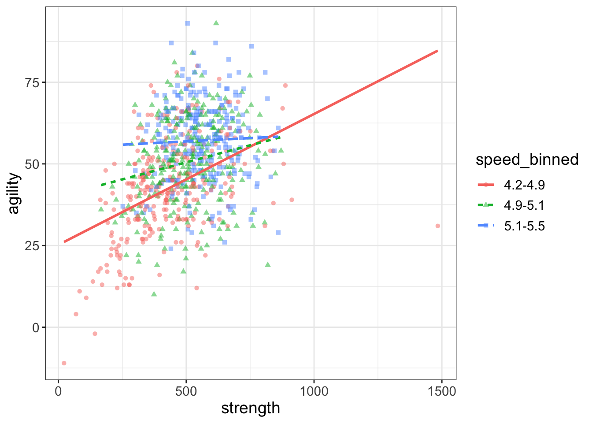
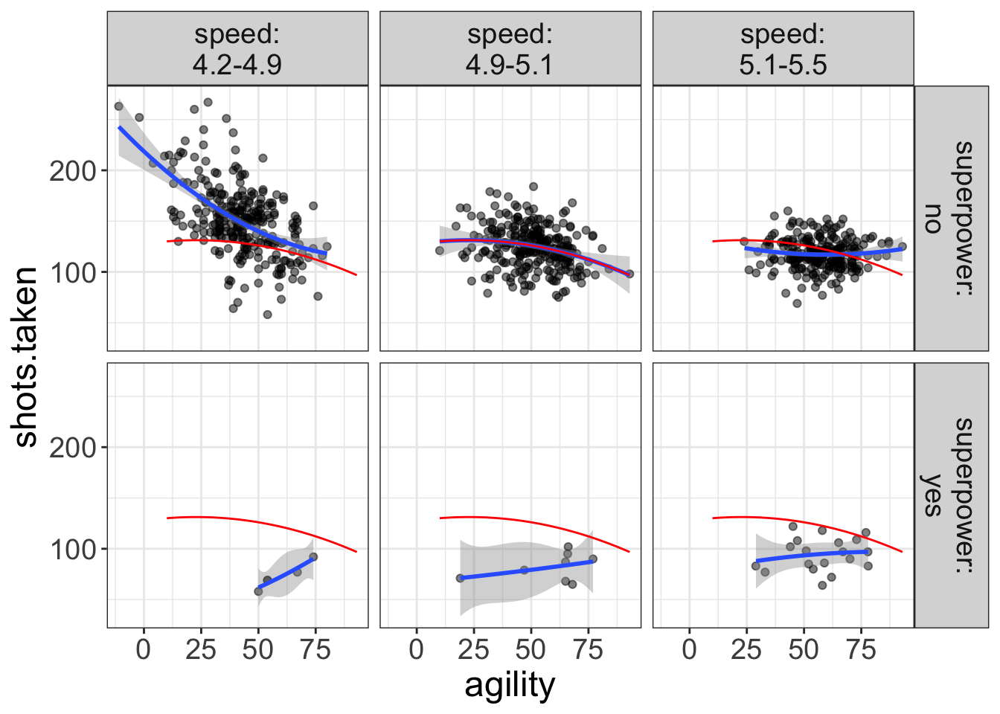
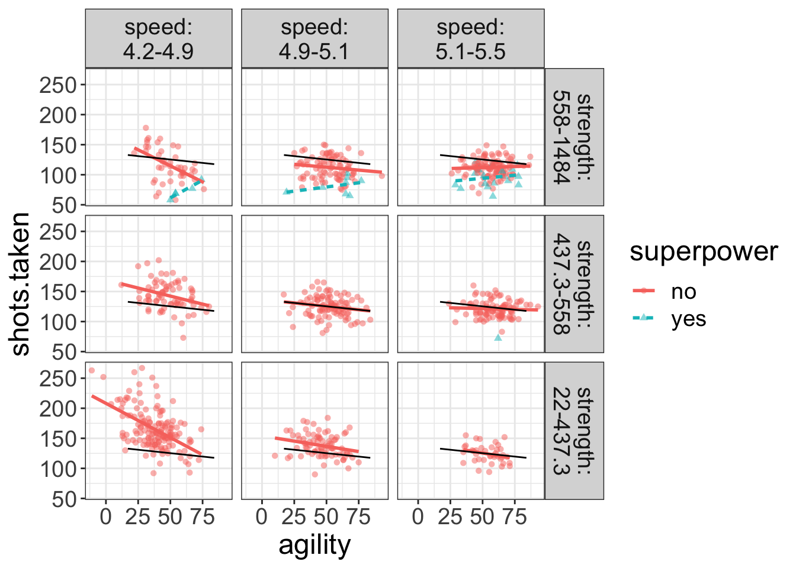
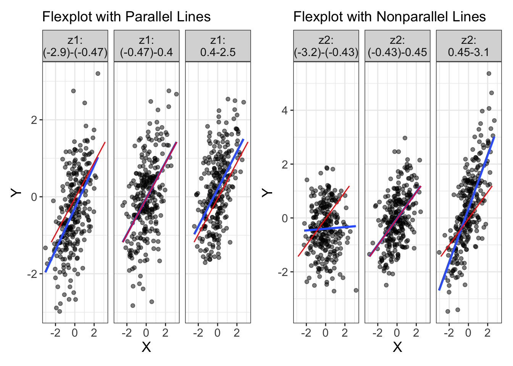
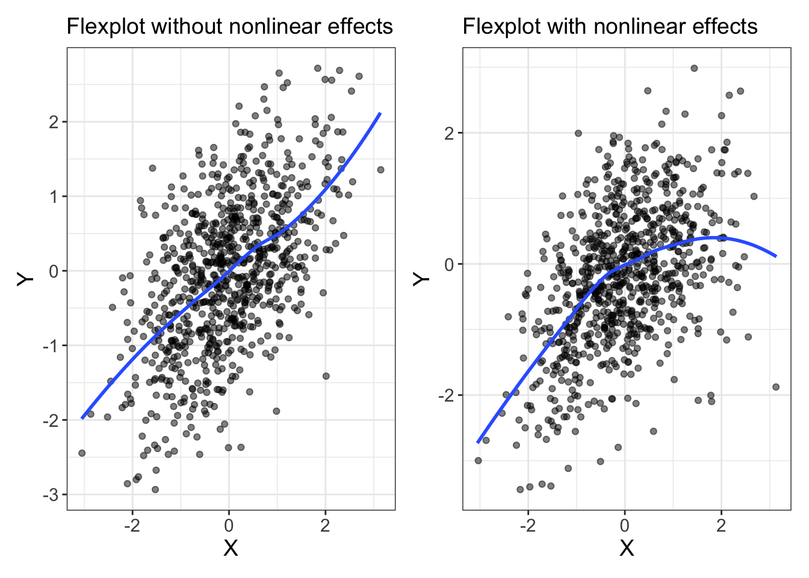
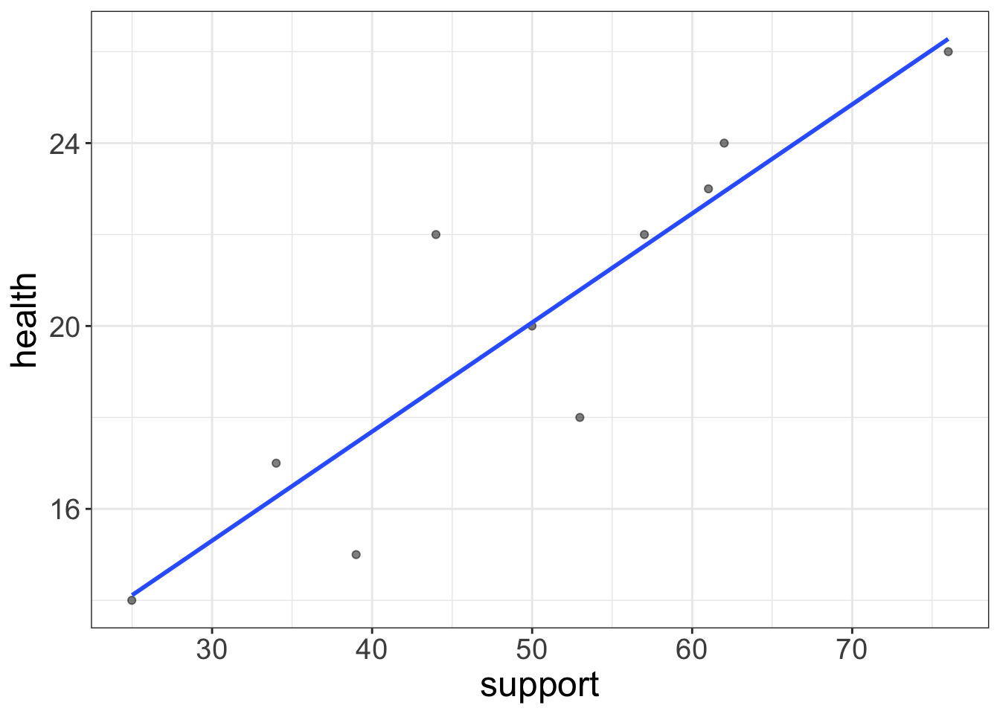
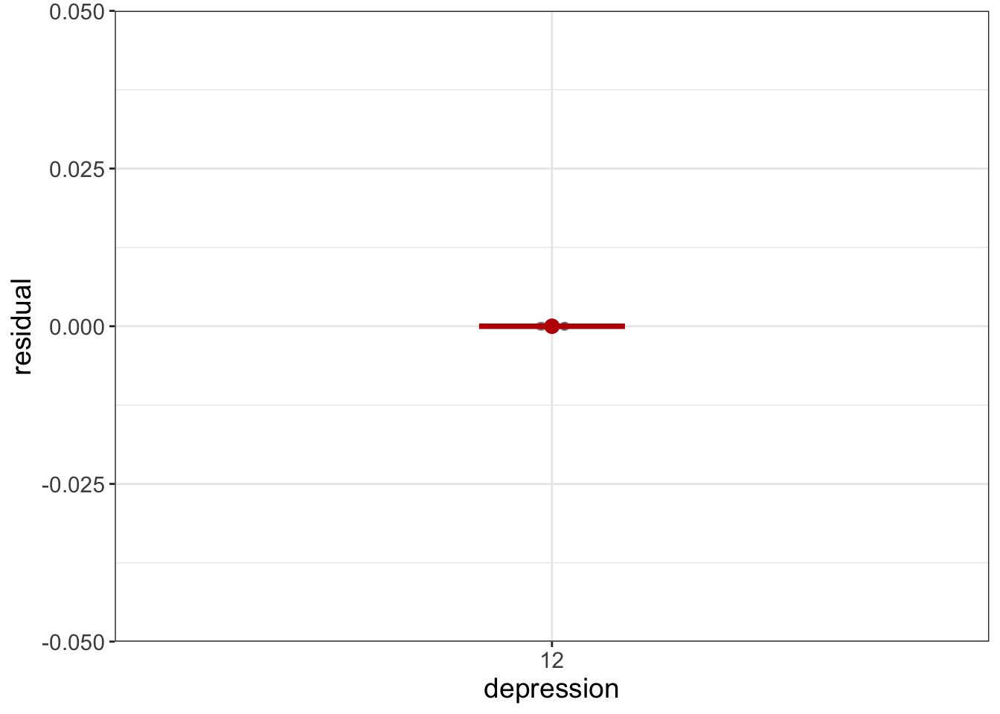
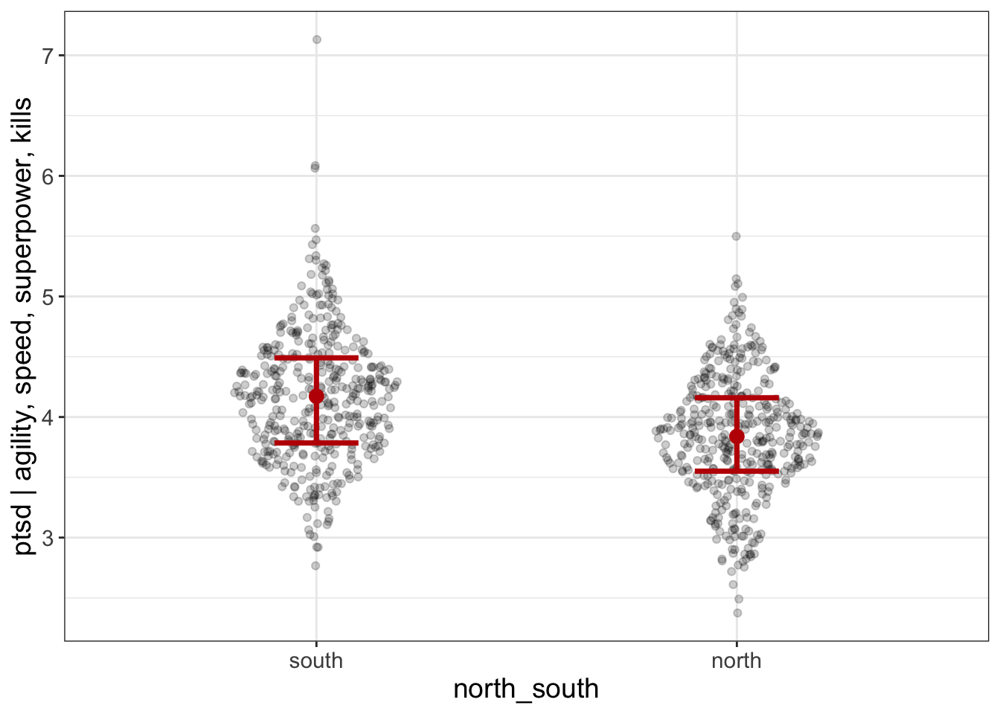
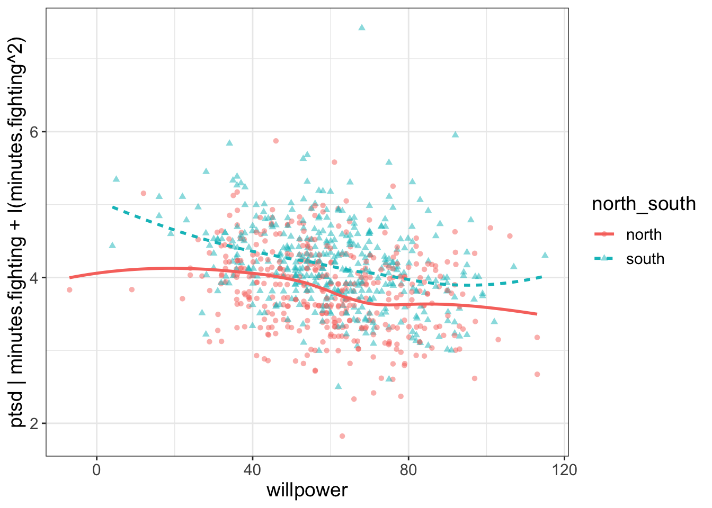

Chapter 10 Visualizing Multivariate General Linear Models
Years ago I was chit-chatting with my dad. I don’t remember how it came up, but we were talking about the death penalty. I am vehemently opposed to the death penalty. My dad, on the other hand, is in favor. As we debated the pros and cons, I mentioned certain races were disproportionately affected.
“Hogwash,” he said. “I’ve seen the statistics. They say that black men are no more likely than white men to receive the death penalty.”
“True,” I said. I was familiar with the statistic he was quoting.
But that’s not the whole story. If a black man kills another black person, he is just as likely to get the death penalty as a white man who kills a white person. However, if a black man kills a white person, they are much more likely to receive the death penalty than if a white man kills a black person.
That there is unfair, you see. (Not to mention the fact that it’s government-sponsored killing, and all that).
My dad’s response?
“Well son,” he said, “That just goes to show you can use statistics to prove anything.”
That pissed me off, I must admit. It was a dismissal of my argument–a protestation that said my statistics were no better than his. But, as we’ll learn, simple bivariate effects (in this case, race and death penalty) are always less complete than multivariate effects (in this case, race of perpetrator and race of victim).
10.1 What is a Multivariate Relationship?
That there is a tricky question. And, you’ll probably get different answers, depending on who you ask. Technically, multivariate means multiple variables. So, I suppose, any analysis that has more than one variable is a multivariate analysis.
But, I’ve actually seen people refer to multivariate relationships in one of two ways:
When one performs an analysis of multiple dependent variables. When statisticians use the word multivariate, they tend to be referring to this sort of analysis, where multiple dependent variables are investigated. These situations call for using Multivariate Analysis of Variance (MANOVA), factor analysis, principle component analysis, structural equation modeling, and canonical correlations. I personally find many (but not all) of these sorts of analyses archaic and quite useless. They are largely atheoretical, they confuse exploratory and confirmatory research, and they’re hard to make sense of. That is not what this chapter is about.
When one performs an analysis of multiple independent variables. Most everybody, with the exception of heritage breed statisticians, use the term multivariate to refer to situations where multiple independent variables are used. This is what I mean when I say multivariate in this textbook. Does that make me a mutt-breed statistician? Maybe. But, sometimes you have to sacrifice authenticity for practicality.
So, yes, this chapter (and those that follow) are referring to situations where we try to predict a single outcome variable from multiple predictor variables. Yay.
10.2 Reasons to use multivariate GLMs
The world is rarely simple. Rarely does one variable alone cause another variable. Rather, variables work together to produce causes. Or, one variable’s effects are contingent upon anothers’. We use mutivariate GLMs to gain a more complete picture of what is influencing our outcome variable.
But, that’s a bit vague and stuff. Let me be a little more specific. There are three reasons you would want to do a multivariate analysis:
Study interaction effects. Sometimes variables “interact,” which means their influence depends on other variable(s). For example, the annoyance I feel (outcome variable) about having department meetings (predictor variable #1) depends on whether there’s food there (predictor variable #2); I’m happy to attend department meetings if they have baklava and pizza. Otherwise, boooo.
You want to control for things you’re (likely) not interested in. For example, you might know depressed people tend to have crappy social lives, but you don’t care about studying social functioning. You really care about depression’s unique influence on, say, health. If that’s the case, we want to “control” for social functioning.
To improve predictions. Long story short, the more variables you have, the better your predictions. So, naturally, if you want to predict who will be the next world wood-chopping champion, you can add more predictors (e.g., bicep circumference, years of experience, beard length).
Before I confabulate about each of these reasons, let’s take a mini-break to look at some pictures. Why not, eh? Pictures are pretty.
Though, as to not bother my mythical editor, I’m going to embed these pretty pictures within the process of data analysis.
10.3 Visualizing Multivariate Relationships in Flexplot
In the previous section, I said there are three primary reasons for doing a multivariate analysis: to study interaction effects, to control for things, and to improve predictions. I’m going to temporarily put the third reason (prediction) aside and focus on interactions and conditioning. These two approaches have very different visualization strategies. But, before I can share those strategies, I need to show you some tools.
Tool time!
10.3.1 Encoding Additional Dimension Using Colors/Lines/Symbols or Panels
As a reminder, flexplot is essentially God-like in its ability to visualize data. For univariate data, remember all we have to do is write the variable name, followed by ~1, then the dataset. For example…
require(flexplot)
data(avengers)
flexplot(speed~1, data=avengers)
flexplot(superpower~1, data=avengers)
For bivariate data, the pattern is similar, except we now put outcome~predictor, data=dataset. In the background, flexplot is going to figure out whether to plot a scatterplot or bee swarm plot:
flexplot(speed~superpower, data=avengers)
flexplot(speed~agility, data=avengers)
Yes, flexplot can read your mind. (Just make sure your computer is password protected. Flexplot hasn’t yet figured out how to steal your secret recipes from your documents folder, but it’s also pretty smart…so, yeah.)
For multivariate relationships, flexplot is even more powerful. In fact, when I originally conceptualized it, my whole purpose was to develop an easy interface for multivariate visualizations. So, that’s where it truly shines.
When trying to visualize interactions, it is important to see all the variables simultaneously. But how exactly do you visualize multivariate data? Alas, we humans can really only see in 3-4 dimensions (width, height, depth, and time). But that’s not even true. We don’t actually see depth. Instead, we rely on sharpness, size, and shading to mimic a third dimension. Even 3D movies aren’t truly 3D–they just trick our vision into believing we’re actually seeing in 3D.
We could use the same tricks for visualization to see three-dimensional data. For example,
require(scatterplot3d)
data(avengers)
scatterplot3d(avengers$speed, avengers$agility, avengers$superpower)
(By the way, I wouldn’t bother installing that package. We won’t use it again.)
I just find these sorts of plots hard to understand. If I were able to view them as a hologram projection, I might find them useful. (Help us Obi Wan, you’re our only hope!). But as a static picture, it’s a bit tough to tell what’s going on. And, 3D plots are limited to three variables; good luck visualizing four dimensions!
So what do we do instead? We can embed the third dimension in the same two-dimensional plot using a different mode of representation.
Lemme show you what I mean. Let’s visualize the same data using flexplot:
flexplot(agility~speed + superpower, data=avengers, method="lm")
Notice how I’ve embedded a third variable (superpower) in the same plot as the two-dimensional data. From this, it’s much easier to see the multivariate relationship: superheroes tend to decrease slightly in agility when speed increases, while non-superheroes tend to increase.
Nice.
Let’s look at another example, but this time with two numeric variables:
flexplot(agility~strength + speed, data=avengers, method="lm")
What did Flexplot do? Well, you done handed it a numeric variable and asked it to plot three variables at the same time. Since Flexplot refuses to resort to 3D plots, you gave it no other option. It decided to break speed into three equal segments (think of it as slow, average, and fast). Then it plotted the datapoints for the slow folks in red, the average folks in green, and the fast folks in blue. It also represented these levels as separate lines (dotted, dashed, and dot-dashed) and symbols (circles, squares, triangles).
But now it’s hard to see what’s going on. Sure, we can see the lines alright, but the raw data are such a jumbled mess it’s impossible to tell whether the regression lines actually fit the data.
Quite a conundrum, that.
So, what to do? Well, let’s investigate another technique called paneling. Paneling means that, rather than plotting the three levels of the strength variable as separate lines/colors/symbols, it plots each of the three levels in their own scatterplot (called a panel). To specify a panel, we use the code y~x | z. In other words, we replace the + with a |. That button’s right above the return button.
Let’s take a look, see:
flexplot(agility~strength | speed, data=avengers)
Now we’re talking! Now there’s no overlaps and we can see that some of these relationships are actually quite curvilinear (particularly the strength/agility relationship for the slow folks).
Maybe we’ll model that curvilinearity with some quadratic lines:
flexplot(agility~strength | speed, data=avengers, method="quadratic")
That’s better.
But now we have a new problem; when the third variable was in the same panel, it was easy to make comparisons across the third variable. But now, it’s much harder. For example, in the image above, which curved line is higher on agility? The average speed folks or the slow folks?
Hard to say.
But, we can use a visual aid called a “ghost line.” A ghost line repeats the line from one panel to another panel. Let’s look at an example:
flexplot(agility~strength | speed, data=avengers,
method="quadratic",
ghost.line="red")
Now we’re getting somewhere! As you can see, the ghost line duplicates the relationship from the middle panel across to the other panels. Now it’s very clear that the curve from the slow group (right-most plot) is higher in agility than the other two.
Why call it ‘Ghost Line’?
Ghost line is kind of a funny name, isn’t it? How did I come up with that name? Well, back when I was a teenager, Nintendo 64 came it. That, my friends, was a brilliant game. One of its hallmark games was Mariokart. In Mariokart, you could choose which character to race with (e.g., Bowser, Mario, Luigi), then you would circle a track, trying to avoid shell-missiles.
Anyhow, as I recall, whenever you were racing and set a speed record, the game would actually record your every move during the entire race. You then had the option to turn on the “ghost racer.” This ghost racer was a semi-transparent image of the exact race that holds the record. The basic idea was that you could try to race against the best race ever recorded.
Cool idea and cool concept. So much so, that I decided I would borrow the idea. Like in Mariokart, the ghost line doesn’t actually reflect anything in that particular panel, but it is a representation of something outside the panel.
Ghost lines, it turns out are essential for doing multivariate analyses, particularly when we start adding even more variables to the analysis. They make it easy to compare fits across panels.
Let’s look at another example, but this time we’ll panel on two variables:
flexplot(shots.taken~agility | speed + superpower, data=avengers,
method="quadratic",
ghost.line="red")
Notice how nearly every single datapoint for the superhero plots (the bottom panel) are below the fit of the ghost line. In other words, superheroes are taking far fewer shots than non-superheroes. We would not be able to see this without the ghost line.
We’ll see several examples in later chapters where the ghost line is essential to helping us figure out what’s going on.
By the way, you may have noticed that the ghost line generally picks the middle-most panel as the reference. But, you can tell Flexplot which panel to reference from. Suppose, for example, if we wanted to reference from the fast panel for superheroes. To do so, we would need to specify a list that tells flexplot the speed and superpower value to reference from:
flexplot(shots.taken~agility | speed + superpower, data=avengers,
method="quadratic",
ghost.line="red",
ghost.reference = list(speed=4.5, superpower="yes"))
Here, we’ve chosen a value for speed that is in the range of the left-most panel (4.5 is within the 4.3-4.9 range) and told flexplot to choose “yes” as the superpower value. We could also specify slow non-superheroes:
flexplot(shots.taken~agility | speed + superpower, data=avengers,
method="quadratic",
ghost.line="orange",
ghost.reference = list(speed=5.2, superpower="no"))
Notice I also changed the color of the ghost line to orange.
By the way, you can (realistically) visualize up to four predictor variables. For example:
flexplot(shots.taken~agility + superpower | speed + strength, data=avengers,
method="lm",
ghost.line="black")
Now, Flexplot is representing the second variable as different lines/colors/symbols while paneling the remaining two variables (speed and strength). Also, the ghost line is referencing off of the middle-most panel for the superheroes.
Don’t worry about interpreting this plot yet; I’ll soon give you some cool tricks you can use to figure out what’s going on here. The important take-home message for you is understanding how you can control the display of flexplot.
In summary, flexplot visualizes multivariate data by encoding additional variables as either a separate color/symbol/line, or in separate panels. To encode a variable as a color/line/symbol, use y~x+z. To encode as separate panels, use y~x|z. When we panel, it makes it hard to compare fits, so we can use “ghost lines” to repeat the pattern from one panel to another.
10.4 What are we looking for when studying a flexplot visual?
So, these graphics are all well and good, but what’s the point? What information do they tell us? Or, maybe the better question is what are we looking for when studying a flexplot visual?
That’s a fantastic question! Pat yourself on the back and buy yourself some ice cream :)
There are three things we’re looking for when looking at a Flexplot graphic:
Trends on the X-axis. This indicates a main effect of the variable on the X-axis.
Nonparallel lines. This indicates there’s an interaction between the variable on the X-axis and one of the other variables.
Nonlinear effects. This is why Flexplot defaults to showing loess lines: if there are nonlinear effects, it will detect them.
I know, that was a lot of information. Let’s go ahead and talk about each of these buggers, one at a time, shall we?
10.4.1 Identifying trends in Flexplot
You already know this. Trust me. Remember back in our bivariate visualization chapter we identified any association between two variables by any sort of slope between X and Y. It’s no different for multivariate plots.
The image below shows two plots; the left image has no trend. The plot on the right has a trend.
set.seed(123324)
x = rnorm(400)
y = .5*x + rnorm(length(x), 0, sqrt(1-.5^2))
z = rnorm(100)
d = data.frame(x=x, y=y, z=z)
a = flexplot(y~x | z, data=d, method="lm", se=F) + labs(title="Flexplot with a Trend (Slope)") +
theme(plot.title = element_text(size=18))
b = flexplot(y~z | x, data=d, method="lm", se=F) + labs(title="Flexplot without a Trend (Slope)") +
theme(plot.title = element_text(size=18))
require(patchwork)
a + b
10.4.2 Identifying nonparallel lines in Flexplot
I’m not going to get into too much detail on this one in this chapter. That’s the subject of my chapter on interaction effects. But it’s helpful for you to know this now, so you know why I’m telling you all this information.
Let’s look at a graphic first. The plot on the left shows mostly parallel lines (with a red ghost line). Notice all the lines are parallel to one another. What does that mean? It says that the relationship between X and Y is consistent: it doesn’t matter the level of Z, the relationship between X and Y is consistently strong and positive. In the right plot, on the other hand, the relationship between X and Y changes drastically, depending on the level of Z; when Z is low, the relationship is essentially zero. As Z increases, the relationship between X and Y strengthens.

We call this an “interaction effect.” An interaction effect says that the effect of one variable on another (e.g., X on Y) depends on the level of a third variable (Z in this case). Interaction effects are pretty freaking important in stats–if they exist and we fail to identify them, it really screws up our model! So we want to be able to identify them. With ghost lines (and Flexplot), we have a way: if the lines are not approximately parallel, there’s an interaction in the data that needs to be modeled.
10.4.3 Identifying nonlinear effects
Like interaction effects, nonlinear effects are important to detect, if they’re there. If we miss them (and don’t model them), it really screws up our model and we might not even know it!
Fortunately, it’s easy to identify nonlinear effects. We just ask Flexplot to show loess lines. Remember that loess lines bend with the data. So, if there’s a bend, it will show that bend. Here’s an example below. The plot on the left shows no nonlinear effects. The one on the right shows a nonlinear effect.

These multipaneled flexplots are kind of tricky to interpret, but they’re pretty necessary. They allow us to detect interaction/nonlinear effects. Assuming there are none of these sorts of effects, we can use a much simpler visualization tool called Added Variable Plots.
But, that condition is pretty important, so I’m going to say it again, but with bold this time: added variable plots are an easy to interpret multivariate plot, but you can only use them if there are no interactions/nonlinear effects in your model.
(This statement is actually a bit simplified, and you can actually use them for visualizing models with these sorts of effects, but I’m not going to get into that here. If you’re interested, you can read about it in a paper I wrote. )
10.4.4 Encoding Additional Dimensions Using Added Variable Plots
Earlier I said we used multivariate analyses for two primary purposes: (1) to identify interactions, and (2) to “control” for other variables. The previous section displayed the additional variables colors/symbols/lines or as separate panels. These plots are great for identifying detecting interactions. (Again, we’ll review how this is done later). If there are no interactions, we can simplify the visualization immensely by using added variable plots (or AVPs).
Before we talk about AVPs, though, let me offer some definitions of important terms. Let’s say you know that one’s social support structure affects health. You also know that depression affects health, but you want to see the unique effect of depression on health, above and beyond social structure. When doing this sort of analysis, we have three types of variables: the outcome variable (you already know what this is), the “control” variable, and the “interest” variable.
The control variable is the variable you’re trying to control for. Usually, we don’t care about this variable. In our example, social support is the control variable.
The interest variable is the variable whose unique effect you’re interested in studying. In this example, our interest variable is depression, because that’s the variable whose influence we’re actually interested in studying.
You can have multiple control variables (e.g., what is the effect of depression on health, after controlling for a. social support, and b. exercise frequency). You could also have multiple interest variables, but this is less common.
Let me quickly tell you what AVPs do, before I go into more detail:
AVPs fit a model between the control variable(s) and the outcome, calculates the residuals, then plots those residuals against the interest variable.
Again, I’ll go over this in detail and explain why we do this. But, before I lose your interest or before I lose you in the details, here’s an example of an AVP in R:
added.plot(agility~speed + strength, data=avengers)
By default, AVP’s control for the first variable(s) entered (speed), then plot the last variable entered (strength) on the x-axis.
10.4.4.1 What Do AVPs Do and Why?
This will be easiest to explain with a simple example. Let’s say we have the following dataset:
| health | depression | support |
|---|---|---|
| 20 | 12 | 50 |
| 20 | 12 | 50 |
| 20 | 12 | 50 |
| 20 | 12 | 50 |
| 20 | 12 | 50 |
| 20 | 12 | 50 |
| 20 | 12 | 50 |
| 20 | 12 | 50 |
| 20 | 12 | 50 |
| 20 | 12 | 50 |
Here, support is our control variable. Let’s go ahead and look at a scatterplot of that model:

The regression line has the equation: \(\text{health} = 20 + NA\times \text{support}\). Let’s go ahead and put each person’s predicted score back in the table, as well as their residual:
| health | depression | support | prediction | residual |
|---|---|---|---|---|
| 20 | 12 | 50 | 20 | 0 |
| 20 | 12 | 50 | 20 | 0 |
| 20 | 12 | 50 | 20 | 0 |
| 20 | 12 | 50 | 20 | 0 |
| 20 | 12 | 50 | 20 | 0 |
| 20 | 12 | 50 | 20 | 0 |
| 20 | 12 | 50 | 20 | 0 |
| 20 | 12 | 50 | 20 | 0 |
| 20 | 12 | 50 | 20 | 0 |
| 20 | 12 | 50 | 20 | 0 |
Just for fun, go ahead and verify that the column labeled prediction is equal to 20 + NA\(\times\) support. Also, go ahead and verify that the column labeled residual is equal to health - prediction.
Now, we have all we need to create an AVP. All we have to do is plot depression on the \(X\) axis and the column labeled “residual” on the \(Y\) axis:

What is this telling us? Remember what a residual means: a residual tells us what remains in the outcome variable after removing the effect of whatever we modeled. Here, we modeled the effect of social support on health. So, this residual represents health, after removing the effect of social support.
And that, my friends, is exactly what we were looking for! Whenever we are trying to “control” or “condition” on some variable, the appropriate visual to use is an AVP.
By the way, I didn’t invent AVPs. (I wish I had!). But, I did have made a few cool modifications to them.
10.4.5 Dustin’s Cool Modifications to Added Variable Plots
I think most people would be confused looking at added variable plots. Remember, we’re plotting residuals, which means your outcome variable will now be centered on zero. I think if reviewers see this, they might have a heart attack.
“Wait a minute!” they might say, “Your DV ranges from 10-60 and yet your Y-axis ranges from -10 to 10. Clearly the authors are bozos and have done something wrong! Reject!”
Of course, you, being the wise statistical Jedi that you are, would recognize that it’s plotting a residual, not a raw score. To avoid confusion from under-educated reviewers, Flexplot actually adds the mean of the DV back into the residuals. This makes sure the Y axis is on the same scale as the original DV. Flexplot also relabels the \(Y\)-axis to highlight that it’s showing residuals not actual outcome scores. (In this case, it would say health | support).
So, in short, AVPs literally fit a linear model predicting the outcome from the control variable(s), compute the residuals, then plot the interest variable against the residuals. These plots visually show us the effect of the interest variable, after controlling for the control variable(s).
These were small modifications, I admit. Rescaling the residuals and adding labels to the Y-axis is more intuitive, but the next modification is more extreme. We’re going to combine the awesomeness of Flexplot with the awesomeness of AVPs.
Remember how Flexplot is able to visualize multiple variables at a time? After a bit of math, I figured out how to extend AVPs to multivariate plots. Let’s look at an example:

THe above plot is showing the relationship between two predictor variables (therapy.type and motivation) on weight loss, after controlling for health/muscle gain (and their interaction). That’s pretty sweet.
10.4.5.1 Using Flexplot To Do AVPs
There’s really two ways to use AVPs. One way is easy, but less flexible. The other is harder, but much more flexible. If you only have one interest variable and your control variables have simple relationships with the outcome, you can create AVPs like this:
added.plot(ptsd~agility + north_south, data=avengers)
The last variable entered (in this case, north_south) will be treated as the interest variable. All others will be control variables. Here’s an example with multiple control variables:
added.plot(ptsd~agility + speed + superpower + kills + north_south, data=avengers)
(These plots seem to say that, even after controlling for agility, speed, superpowers, and # of kills, which battlefield one fought on [north versus south] still predicts ptsd).
Sometimes, however, you might want to have multiple interest variables. Or maybe you have quadratic and/or interaction effects you need to model for the control variables. In that case, you’ll need to add the lm.formula argument to AVP:
added.plot(ptsd~willpower + north_south, data=avengers,
lm_formula = ptsd~minutes.fighting + I(minutes.fighting^2))
The above example fits a quadratic (nonlinear) regression between minutes.fighting and ptsd, then plots willpower and north_south against these residuals. In other words, minutes.fighting (and the nonlinear effect of minutes.fighting) are the “control variables” and willpower and north_south are the interest variables.
10.5 Summary
For this book, “multivariate” means we have multiple independent variables. We use multivariate analyses when we want to model interactions, when we want to control for things, and/or when we want to predict things. If we’re trying to visualize interactions, we can use flexplot to represent a variable as a color/symbol/line or as separate panels. If we’re trying to visualize after we’ve controlled for variables, we use AVPs.
10.6 Practice
- Describe how each of the following relationships will look. Try drawing a plot that matches your expectations. Then plot the actual relationships. How close were you?
flexplot(superpower~1, data=avenger)
flexplot(speed~agility + superpower, data=avenger)
flexplot(agility~superpower | speed, data=avenger)
flexplot(agility~speed + strength | superpower, data=avenger)
flexplot(agility~speed | strength + superpower, data=avenger)Suppose we wanted to plot the relationship between agility and speed, after controlling for superpower. How would you use an AVP to do that?
Suppose our interest variables are speed and agility, our outcome variable is ptsd, and our control variables are kills and injuries (and the interaction between the two). How would you use an AVP to visualize that?